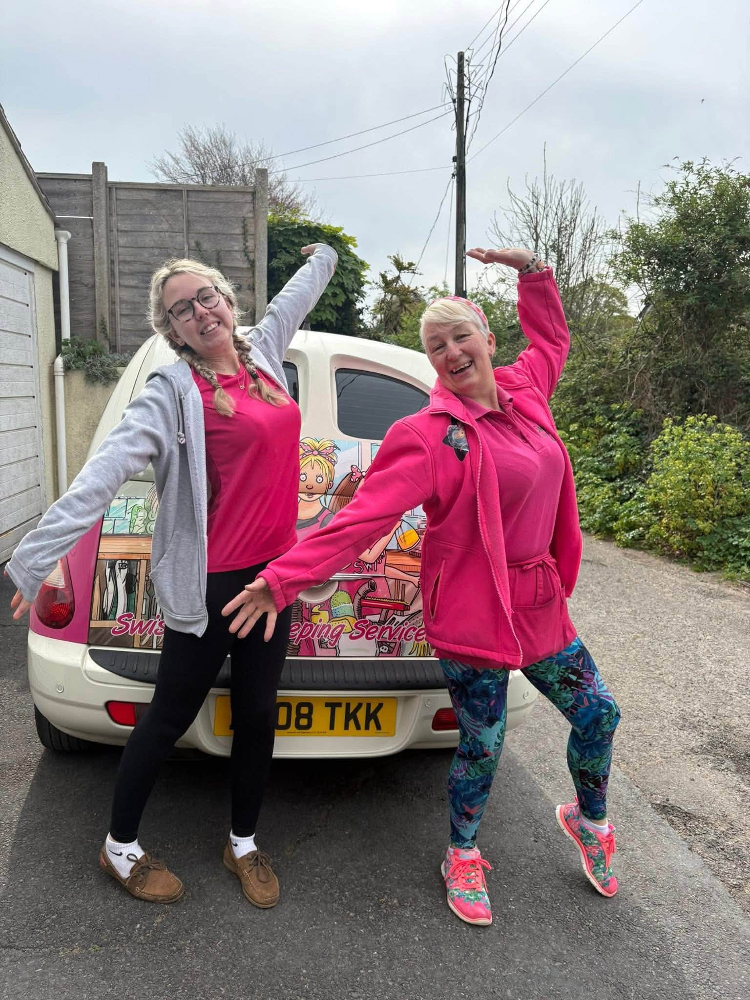
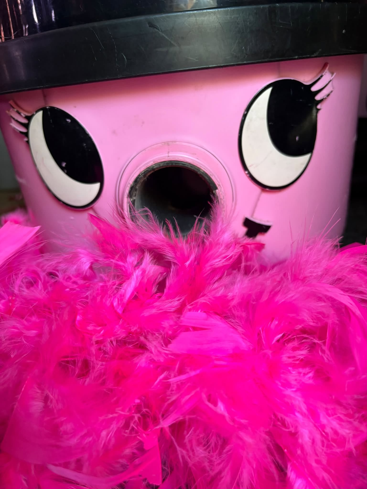
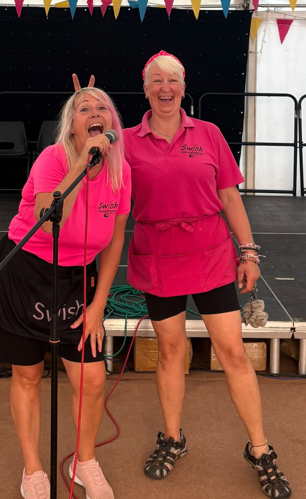
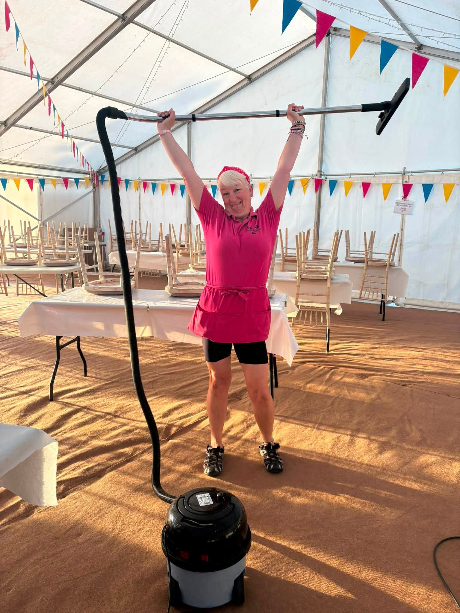

Cleaning
Regular home cleaning, housekeeping, holiday lets and commercial spaces.
Swish is Sarah and a team of local people helping homes, businesses and families across Dawlish and nearby with cleaning, ironing, errands, companionship and everyday home help.

Regular home cleaning, housekeeping, holiday lets and commercial spaces.
Ironing completed and returned, taking another job off your list.
Shopping, collections, deliveries and practical jobs where an extra pair of hands helps.
Friendly visits, practical support and time spent together when a little extra help makes life easier.

Swish has plenty of personality, but the important things are taken seriously. The team is insured and DBS checked, uses professional products with COSHH training and product information in place, and treats customers' homes, businesses and privacy with care.
Swish is independent, local and discreet, with products chosen carefully around people, homes and pets.
The team had the chance to clean on the set of the TV series Bergerac.
Swish helped with the marquee and got involved in the parade and behind the scenes.
More than 130 homes, alongside offices, a theatre, salon, village hall, holiday lets and other local spaces.
A quick look at Swish getting stuck into a recent job.
Watch on Facebook

Tell Sarah what you need and she’ll let you know how Swish can help.